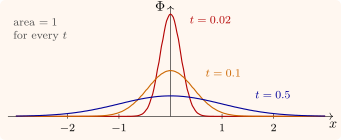

6.1 The fundamental solution
The heat equation is unchanged by the scaling \(x \mapsto \lambda x\), \(t \mapsto \lambda ^2t\), which suggests looking for solutions depending on \(|x|^2/t\). With total heat \(1\) released at the origin at \(t = 0\), this leads to the heat kernel \[ \Phi (x, t) = \frac {1}{(4\pi \kappa t)^{n/2}}\,e^{-|x|^2/4\kappa t}, \qquad t > 0 . \] It solves (6.1) for \(t > 0\), it is positive, \(\int _{\mathbb R^n}\Phi (x, t)\,dx = 1\) for every \(t\), and as \(t \to 0\) it concentrates at the origin: it is the normal density with mean \(0\) and variance \(2\kappa t\) in each coordinate (Figure 8). The width \(\sqrt {4\kappa t}\) is the diffusion length: heat spreads a distance proportional to \(\sqrt t\), not \(t\).

Theorem 6.1.1. Let \(g\) be bounded and continuous on \(\mathbb R^n\). Then \[ u(x, t) = \int _{\mathbb R^n}\Phi (x - y, t)\,g(y)\,dy \] is \(C^\infty \) in \(\mathbb R^n \times (0, \infty )\), solves (6.1) there, satisfies \(\inf g \leq u \leq \sup g\), and \(u(x, t) \to g(x_0)\) as \((x, t) \to (x_0, 0)\).
Proof. Every derivative of \(\Phi \) in \(x\) and \(t\) is, for \(t\) in a compact subset of \((0, \infty )\), bounded by a polynomial in \(|x|\) times \(e^{-|x|^2/4\kappa t}\), so differentiation under the integral is justified, \(u\) is \(C^\infty \), and \(u_t - \kappa \Delta u = \int (\Phi _t - \kappa \Delta \Phi )(x - y, t)\,g(y)\,dy = 0\). The bounds follow from \(\Phi > 0\) and \(\int \Phi = 1\). For the initial value, given \(\varepsilon > 0\) choose \(\delta \) with \(|g(y) - g(x_0)| < \varepsilon \) for \(|y - x_0| < 2\delta \). For \(|x - x_0| < \delta \), \[ |u(x, t) - g(x_0)| \leq \int \Phi (x - y, t)\,|g(y) - g(x_0)|\,dy \leq \varepsilon + 2\sup |g|\int _{|y - x| > \delta }\Phi (x - y, t)\,dy , \] and the last integral is the probability that a normal variable with variance \(2\kappa t\) exceeds \(\delta \) in length, which tends to \(0\) as \(t \to 0\). □
Three consequences stand out. Smoothing: even if \(g\) is discontinuous, \(u\) is infinitely differentiable for every \(t > 0\). Infinite speed of propagation: if \(g \geq 0\) and \(g \neq 0\), then \(u(x, t) > 0\) for every \(x\) and every \(t > 0\), because \(\Phi \) is positive everywhere; the heat equation, unlike the wave equation, has no domain of dependence. The amounts involved far away are absurdly small (Software 6.4.2), and the defect is in Fourier’s law, not in the mathematics. Irreversibility: smoothing cannot be undone, which is why the backward equation of Section 3 is ill posed. A source \(F\) is handled, as for the wave equation, by Duhamel’s principle: \[ u(x, t) = \int _0^t\!\!\int _{\mathbb R^n}\Phi (x - y, t - s)\,F(y, s)\,dy\,ds \] solves \(u_t = \kappa \Delta u + F\) with \(u(x, 0) = 0\).
Example 6.1.2. In one dimension with \(g = 1\) for \(|x| < a\) and \(0\) otherwise, \(u(x, t) = \frac 12\int _{-a}^a e^{-(x - y)^2/4\kappa t}\,dy/\sqrt {\pi \kappa t}\), and with the substitution \(z = (x - y)/\sqrt {4\kappa t}\), \[ u(x, t) = \frac 12\Bigl (\operatorname {erf}\frac {x + a}{\sqrt {4\kappa t}} - \operatorname {erf}\frac {x - a}{\sqrt {4\kappa t}}\Bigr ), \qquad \operatorname {erf}z = \frac 2{\sqrt \pi }\int _0^ze^{-s^2}\,ds . \] The jumps at \(x = \pm a\) are smoothed instantly into error-function profiles of width \(\sqrt {4\kappa t}\). For large \(t\), \(u(0, t) \approx 2a/\sqrt {4\pi \kappa t}\): the heat \(2a\) spread over the diffusion length.
Questions on this section
Stuck on something here? Ask below and it stays attached to this topic.